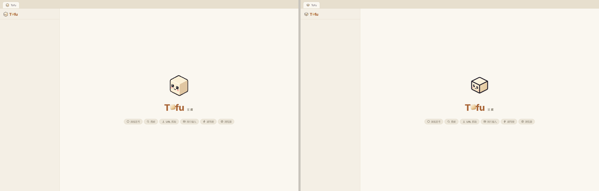
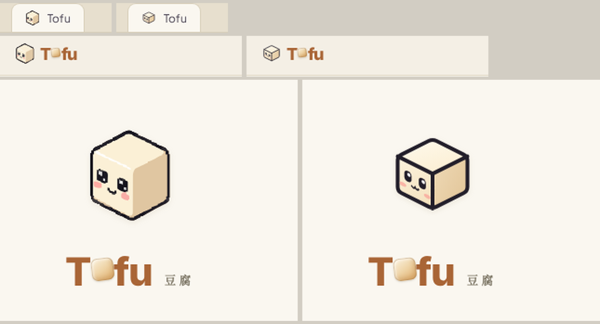

Tofu Logo 重设计 — 三个方向
现款 tofu-welcome.svg 是像素稿的机器描摹(30.6 KB、几十个冗余贝塞尔 path),边缘阶梯不齐,favicon 下糊成一团。
三个候选全部按精确几何手写,2 KB 上下。
A 精修等距立方体(保留现有血统,最稳妥的进化) ·
B 圆角扁平方块(app-icon 风,小尺寸最清晰) ·
C 规整像素(致敬现款像素风,但每个像素落在严格网格上)
owner 拍板(2026-07-28):方向定为 A,B/C 放弃 —— A 已按反馈把五官放大 ~40% 并上移(占满前脸),
并为 favicon 配了简化变体(更大眼、加粗笑、去高光),16px 实测表情可读。
owner 现场复审(同日):A/A′ 上线后被否决——放大五官在真实欢迎屏太吵,硬几何丢了手作感;
已全量回滚。A2 新 brief:比例回现款、猫嘴 ω 保留、只修工艺不修性格(圆角顶点+柔渐变),
且必须 in-situ 真截图过 owner 才能碰 tracked 文件。
现款(对照)
tofu-welcome.svg · 30.6 KB · VTracer 描摹栅格,阶梯随机、内部棱线歪斜,16px 五官糊化
A · 精修等距立方体已否决 · in-situ 复审不通过
2.1 KB · 与现款同一吉祥物,但按错误反馈把五官放大 ~40%——对比条里成立,真实欢迎屏上太吵;
硬几何丢了手作感。教训:设计评审必须在真实场景尺寸下进行,不能看对比条。
B · 圆角扁平方块小尺寸之王
1.3 KB · 放弃透视,正面圆角方块 + 顶部"开盖"弧线暗示豆腐块。最现代、最 app-icon;
16px 下五官唯一完全清晰的一枚。代价:少了立方体的立体感,性格更"软"。
C · 规整像素致敬现款
8.7 KB · 保留像素血统但每个像素落在严格 32×32 网格上(生成器 gen_candidate_c.py 解析式生成,
内部棱线也是像素)。棱角均匀、左右镜像对称。注意:像素风在 16px favicon 需另配一张手绘 16×16 专版
(像素品牌惯例,中选后我会补)。
A2 · 柔边精修(当前候选)等 in-situ 验收
2.2 KB · 按 owner 新 brief:五官比例/位置贴现款(不作大),猫嘴 ω 保留;
只修工艺不修性格——圆角顶点 plush 轮廓、更柔的三面渐变、高光压暗。尺寸阶梯:
in-situ 验收区(真实场景真截图)
生产 CSS + 真实 markup 的欢迎屏复刻(insitu.html),playwright 无头 Chromium 实拍:
浏览器标签 16px / 侧栏 22px / 欢迎屏 64px+字标。左 = 现款,右 = A2。

分区放大(6×):标签 16px / 侧栏 22px / 欢迎屏 64px:

A′ · favicon 简化变体已否决 · 随 A 一起撤回
1.6 KB · 同一立方体,但五官再放大、猫嘴换加粗单弧笑、去高光、描边 2.6→3。
16px 实测三方对比(现款 / A 全细节 / 本变体)中唯一表情可读的版本。上线时 index.html favicon 指向此文件,
侧栏 22px 与欢迎屏仍用 A 全细节版。
字标联动(生产 CSS 等值复刻)
欢迎屏「Tofu 豆腐」字标里的 cube-o 是 CSS 画的扁平圆角块(#F9EDD6→#E0AE6C 渐变 + 内阴影,-7°)。
与新 A 的关系:字标 o 是「豆腐块」的抽象符号、图标是具象立方体——同名词不同详略,品牌惯例成立;
且 cube-o 的奶油琥珀渐变与 A 的三面奶油色同源,不打架,字标零改动。下图为新 A + 生产字标的真实搭配:
Tofu豆腐